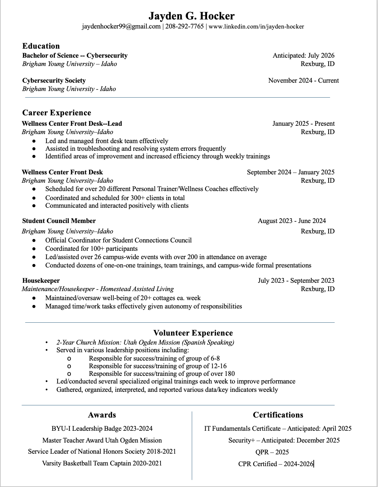

My Portfolio
Technical Skills
Web Development: Proficiency in HTML, JavaScript, and backend technologies like Node.js.
Cybersecurity & IT: Experience in website auditing, penetration testing, and security best practices.
Database Management: Working knowledge of MySQL, and database security principles.
System Administration: Familiarity with Linux, AWS, Google Firebase, and cloud computing fundamentals.
Soft Skills
Beyond technical expertise, I also bring valuable interpersonal and problem-solving skills, including:
Attention to Detail – Ensuring every project meets the highest standards of quality.
Critical Thinking – Analyzing problems and finding efficient, secure, and scalable solutions.
Collaboration – Effectively working with teams and clients to achieve project goals.
Adaptability – Constantly learning and improving to stay ahead in the fast-evolving tech world.
If you are looking for someone who is dedicated, hardworking, and eager to contribute, I would love to connect! I bring a mix of technical expertise and problem-solving skills that can add value to any team.
Contact me:
Email - jayden.hocker@icloud.com
LinkedIn - https://www.linkedin.com/in/jayden-hocker/
Phone - 208-292-7765